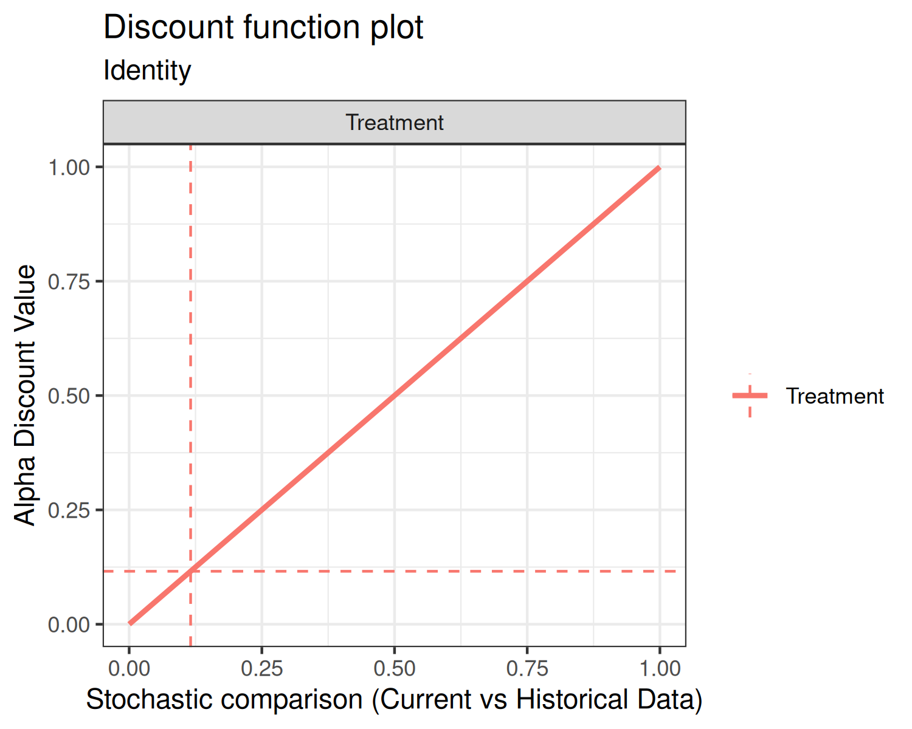
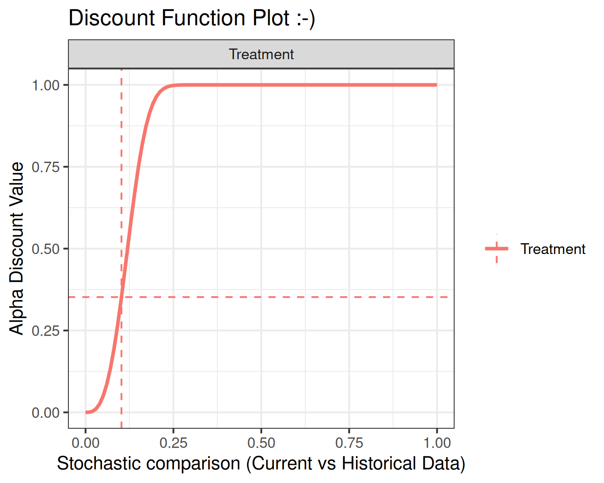
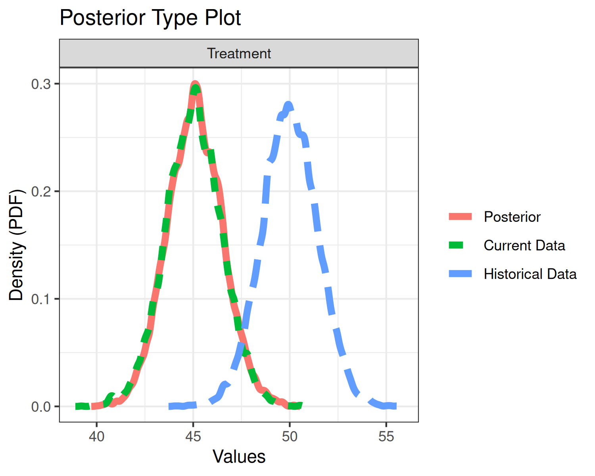
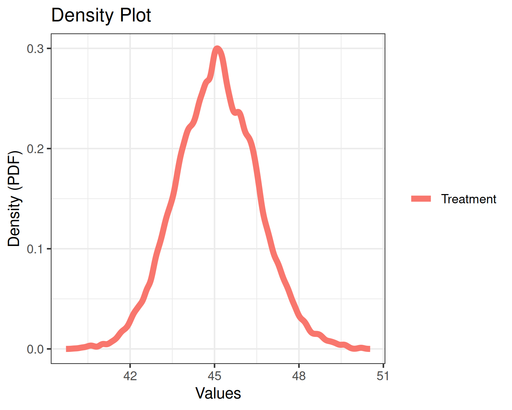
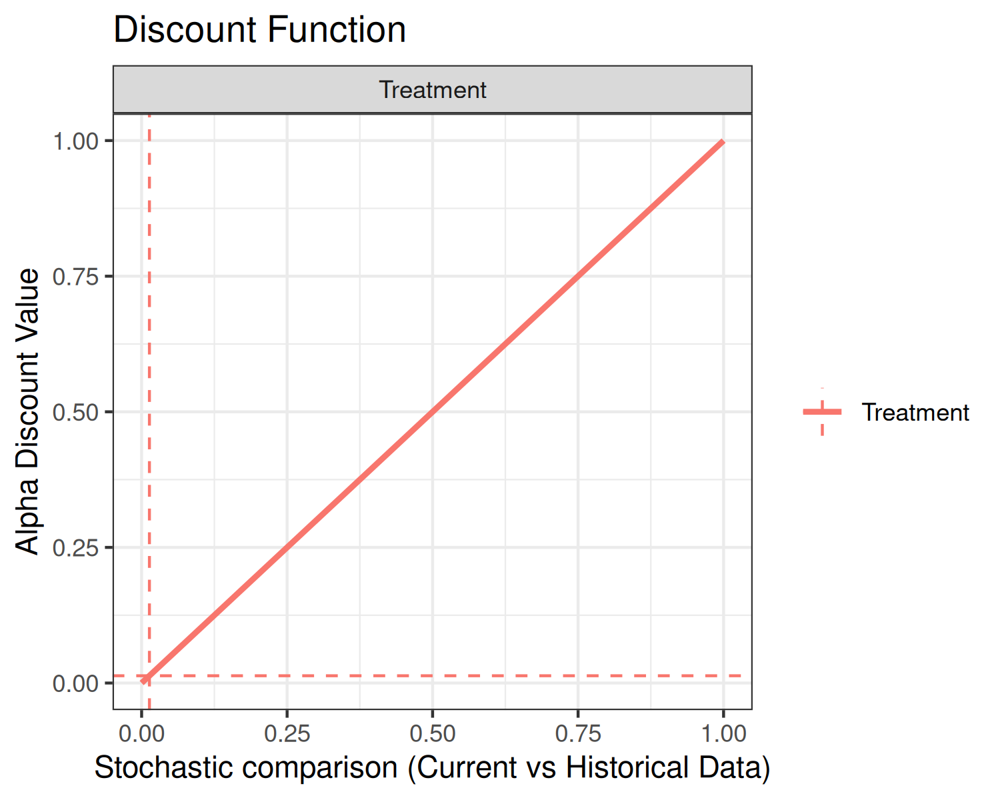
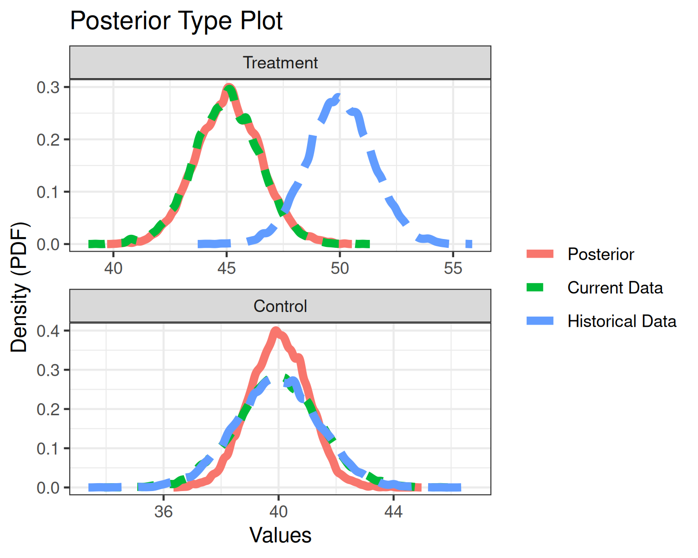
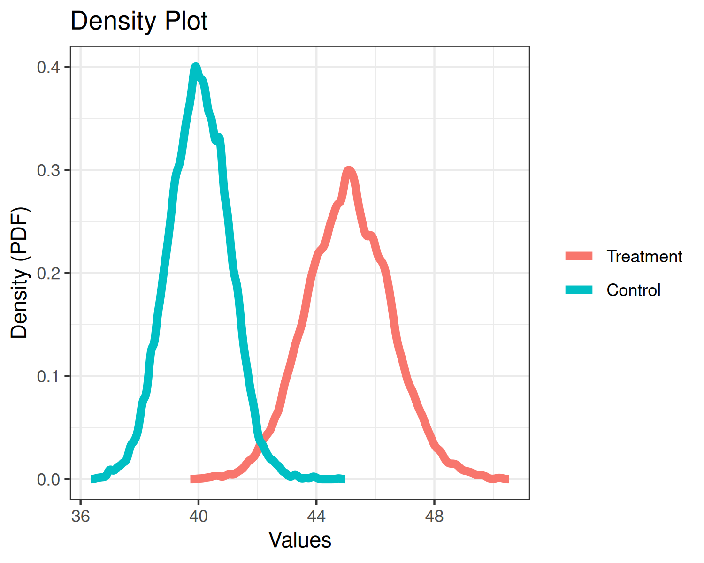
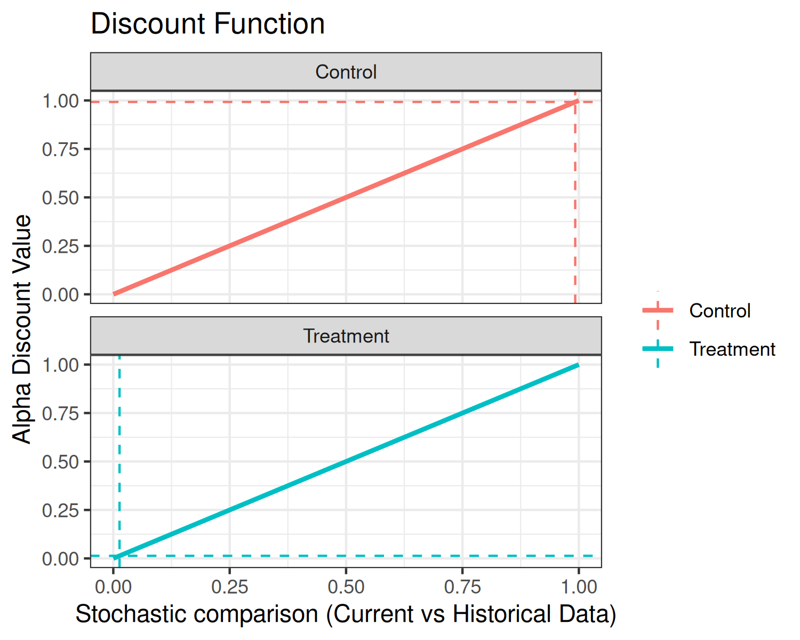

Normal Mean Estimation with bayesDP
Donnie Musgrove
2026-06-23
Source:vignettes/bdpnormal-vignette.Rmd
bdpnormal-vignette.RmdIntroduction
The purpose of this vignette is to introduce the
bdpnormal function. bdpnormal is used for
estimating posterior samples from a Gaussian mean outcome for clinical
trials where an informative prior is used. In the parlance of clinical
trials, the informative prior is derived from historical data. The
weight given to the historical data is determined using what we refer to
as a discount function. There are three steps in carrying out
estimation:
Estimation of the historical data weight, denoted , via the discount function
Estimation of the posterior distribution of the current data, conditional on the historical data weighted by
If a two-arm clinical trial, estimation of the posterior treatment effect, i.e., treatment versus control
Throughout this vignette, we use the terms current,
historical, treatment, and
control. These terms are used because the model was
envisioned in the context of clinical trials where historical data may
be present. Because of this terminology, there are 4 potential sources
of data:
Current treatment data: treatment data from a current study
Current control data: control (or other treatment) data from a current study
Historical treatment data: treatment data from a previous study
Historical control data: control (or other treatment) data from a previous study
If only treatment data is input, the function considers the analysis a one-arm trial. If treatment data + control data is input, then it is considered a two-arm trial.
Estimation of the historical data weight
In the first estimation step, the historical data weight is estimated. In the case of a two-arm trial, where both treatment and control data are available, an value is estimated separately for each of the treatment and control arms. Of course, historical treatment or historical control data must be present, otherwise is not estimated for the corresponding arm.
When historical data are available, estimation of is carried out as follows. Let , , and denote the sample mean, sample standard deviation, and sample size of the current data, respectively. Similarly, let , , and denote the sample mean, sample standard deviation, and sample size of the historical data, respectively. Then, the posterior distribution of the mean for current data, under vague (flat) priors is
Similarly, the posterior distribution of the mean for historical data, under vague (flat) priors is
We next compute the posterior probability . Finally, for a discount function, denoted , is computed as where may be one or more parameters associated with the discount function and scales the weight by a user-input maximum value. More details on the discount functions are given in the discount function section below.
There are several model inputs at this first stage. First, the user
can select the discount function type via the
discount_function input (see below). Next, choosing
fix_alpha=TRUE forces a fixed value of
(at the alpha_max input), as opposed to estimation via the
discount function. In the next modeling stage, a Monte Carlo estimation
approach is used, requiring several samples from the posterior
distributions. Thus, the user can input a sample size greater than or
less than the default value of number_mcmc=10000.
An alternate Monte Carlo-based estimation scheme of
has been implemented, controlled by the function input
method="mc". Here, instead of treating
as a fixed quantity,
is treated as random. First,
,
is computed as
where
is the
th
quantile of a standard normal (i.e., the pnorm R function).
Here,
and
are the variances of
and
,
respectively. Next,
is used to construct
via the discount function. Since the values
and
are computed at each iteration of the Monte Carlo estimation scheme,
is computed at each iteration of the Monte Carlo estimation scheme,
resulting in a distribution of
values.
Discount function
There are currently three discount functions implemented throughout
the bayesDP package. The discount function is specified
using the discount_function input with the following
choices available:
identity(default): Identity.weibull: Weibull cumulative distribution function (CDF);scaledweibull: Scaled Weibull CDF;
First, the identity discount function (default) sets the discount weight .
Second, the Weibull CDF has two user-specified parameters associated
with it, the shape and scale. The default shape is 3 and the default
scale is 0.135, each of which are controlled by the function inputs
weibull_shape and weibull_scale, respectively.
The form of the Weibull CDF is
The third discount function option is the Scaled Weibull CDF. The
Scaled Weibull CDF is the Weibull CDF divided by the value of the
Weibull CDF evaluated at 1, i.e.,
Similar to the Weibull CDF, the Scaled Weibull CDF has two
user-specified parameters associated with it, the shape and scale, again
controlled by the function inputs weibull_shape and
weibull_scale, respectively.
Using the default shape and scale inputs, each of the discount functions are shown below.


In each of the above plots, the x-axis is the stochastic comparison between current and historical data, which we’ve denoted . The y-axis is the discount value that corresponds to a given value of .
An advanced input for the plot function is print. The
default value is print = TRUE, which simply returns the
graphics. Alternately, users can specify print = FALSE,
which returns a ggplot2 object. Below is an example using
the discount function plot:

Estimation of the posterior distribution of the current data, conditional on the historical data
With
in hand, we can now estimate the posterior distribution of the mean of
the current data. Using the notation of the previous section, the
posterior distribution is
At this model stage, we have in hand number_mcmc
simulations from the augmented mean distribution. If there are no
control data, i.e., a one-arm trial, then the modeling stops and we
generate summaries of the posterior distribution of
.
Otherwise, if there are control data, we proceed to a third step and
compute a comparison between treatment and control data.
Estimation of the posterior treatment effect: treatment versus control
This step of the model is carried out on-the-fly using the
summary or print methods. Let
and
denote posterior mean estimates of the treatment and control arms,
respectively. Currently, the implemented comparison between treatment
and control is the difference, i.e., summary statistics related to the
posterior difference:
.
In a future release, we may consider implementing additional comparison
types.
Inputting Data
The data inputs for bdpnormal are mu_t,
sigma_t, N_t, mu0_t,
sigma0_t, N0_t, mu_c,
sigma_c, N_c, mu0_c,
sigma0_c, and N0_c. The data must be input as
(mu, sigma, N) triplets. For
example, mu_t, the sample mean of the current treatment
group, must be accompanied by sigma_t and N_t,
the sample standard deviation and sample size, respectively. Historical
data inputs are not necessary, but using this function would not be
necessary either.
At the minimum, mu_t, sigma_t, and
N_t must be input. In the case that only
mu_t, sigma_t, and N_t are input,
the analysis is analogous to a one-sample t-test. Each of the following
input combinations are allowed:
- (
mu_t,sigma_t,N_t) - one-arm trial - (
mu_t,sigma_t,N_t) + (mu0_t,sigma0_t,N0_t) - one-arm trial - (
mu_t,sigma_t,N_t) + (mu_c,sigma_c,N_c) - two-arm trial - (
mu_t,sigma_t,N_t) + (mu0_c,sigma0_c,N0_c) - two-arm trial - (
mu_t,sigma_t,N_t) + (mu0_t,sigma0_t,N0_t) + (mu_c,sigma_c,N_c) - two-arm trial - (
mu_t,sigma_t,N_t) + (mu0_t,sigma0_t,N0_t) + (mu0_c,sigma0_c,N0_c) - two-arm trial - (
mu_t,sigma_t,N_t) + (mu0_t,sigma0_t,N0_t) + (mu_c,sigma_c,N_c) + (mu0_c,sigma0_c,N0_c) - two-arm trial
Examples
One-arm trial
Suppose we have historical data with a mean of mu0_t=50,
standard deviation of sigma0_t=10, and sample size of
N0_t=50 patients. Also suppose that we have current data
with a mean of mu_t=45, standard deviation of
sigma_t=10, and sample size of N_t=50. To
illustrate the approach, let’s first give full weight to the historical
data. This is accomplished by setting alpha_max=1 and
fix_alpha=TRUE as follows:
set.seed(42)
fit1 <- bdpnormal(mu_t = 45,
sigma_t = 10,
N_t = 50,
mu0_t = 50,
sigma0_t = 10,
N0_t = 50,
alpha_max = 1,
fix_alpha = TRUE,
method = "fixed")
summary(fit1)##
## One-armed bdp normal
##
## data:
## Current treatment: mu_t = 45, sigma_t = 10, N_t = 50
## Historical treatment: mu0_t = 50, sigma0_t = 10, N0_t = 50
## Stochastic comparison (p_hat) - treatment (current vs. historical data): 0.0134
## Discount function value (alpha) - treatment: 1
## 95 percent CI:
## 45.4329 49.6303
## posterior sample estimate:
## mean of treatment group
## 47.5208Based on the summary output of fit1, we can
see that the value of alpha was held fixed at 1. Note that
the print and summary methods result in the
same output. The resulting treatment group mean is approximately 47.5,
which is the average of 45 and 50, as expected.
Now, let’s relax the constraint on fixing alpha at 1 and
let the function estimate alpha. We’ll also take this
opportunity to describe the output of the plot method.
set.seed(42)
fit1a <- bdpnormal(mu_t = 45, sigma_t = 10, N_t = 50,
mu0_t = 50, sigma0_t = 10, N0_t = 50,
fix_alpha = FALSE,
method = "fixed")
summary(fit1a)##
## One-armed bdp normal
##
## data:
## Current treatment: mu_t = 45, sigma_t = 10, N_t = 50
## Historical treatment: mu0_t = 50, sigma0_t = 10, N0_t = 50
## Stochastic comparison (p_hat) - treatment (current vs. historical data): 0.0134
## Discount function value (alpha) - treatment: 0.0134
## 95 percent CI:
## 42.2972 47.9262
## posterior sample estimate:
## mean of treatment group
## 45.0795When alpha is not constrained to one, it is estimated
based on a comparison between the current and historical data. We see
that the stochastic comparison, p_hat, between current
historical and control is 0.0134. Here, p_hat is the
posterior probability of the comparison between the current and
historical data. With the present example, the low value of
p_hat implies that the current and historical sample means
are different. The result is that the weight given to the historical
data is shrunk towards zero. Thus, the estimate of alpha
from the discount function is 0.0134 and the augmented posterior
estimate of the mean is approximately the mean of the current data.
Many of the the values presented in the summary method
are accessible from the fit object. For instance, alpha is
found in fit1a$posterior_treatment$alpha_discount and
p_hat is located at
fit1a$posterior_treatment$p_hat. The augmented mean and CI
are computed at run-time. The results can be replicated as:
## [1] 45.0795
CI95_augmented <- round(quantile(fit1a$posterior_treatment$posterior_mu, prob=c(0.025, 0.975)),4)
CI95_augmented## 2.5% 97.5%
## 42.2972 47.9262Finally, we’ll explore the plot method.
plot(fit1a, type="posteriors")
plot(fit1a, type="density")
plot(fit1a, type="discount")
The top plot displays three density curves. The blue curve is the density of the historical mean, the green curve is the density of the current mean, and the red curve is the density of the current mean augmented by historical data. Since little weight was given to the historical data, the current and posterior means essentially overlap.
The middle plot simply re-displays the posterior mean.
The bottom plot displays the discount function (solid curve) as well
as alpha (horizontal dashed line) and p_hat
(vertical dashed line). In the present example, the discount function is
the identity.
Two-arm trial
On to two-arm trials. In this package, we define a two-arm trial as
an analysis where a current and/or historical control arm is present.
Suppose we have the same treatment data as in the one-arm example, but
now we introduce control data: mu_c = 40,
sigma_c = 10, N_c = 50,
mu0_c = 40, sigma0_c = 10, and
N0_c = 50.
Before proceeding, it is worth pointing out that the discount function is applied separately to the treatment and control data. Now, let’s carry out the two-arm analysis using default inputs:
set.seed(42)
fit2 <- bdpnormal(mu_t = 45, sigma_t = 10, N_t = 50,
mu0_t = 50, sigma0_t = 10, N0_t = 50,
mu_c = 40, sigma_c = 10, N_c = 50,
mu0_c = 40, sigma0_c = 10, N0_c = 50,
fix_alpha = FALSE,
method = "fixed")
summary(fit2)##
## Two-armed bdp normal
##
## data:
## Current treatment: mu_t = 45, sigma_t = 10, N_t = 50
## Current control: mu_c = 40, sigma_c = 10, N_c = 50
## Historical treatment: mu0_t = 50, sigma0_t = 10, N0_t = 50
## Historical control: mu0_c = 40, sigma0_c = 10, N0_c = 50
## Stochastic comparison (p_hat) - treatment (current vs. historical data): 0.0134
## Stochastic comparison (p_hat) - control (current vs. historical data): 0.9922
## Discount function value (alpha) - treatment: 0.0134
## Discount function value (alpha) - control: 0.9922
## alternative hypothesis: two.sided
## 95 percent CI:
## 1.7412 8.5362
## posterior sample estimates:
## treatment group control group
## 45.08 40.01The summary method of a two-arm analysis is slightly
different than a one-arm analysis. First, we see p_hat and
alpha reported for the control data. In the present
analysis, the current and historical control data have sample means that
are very close, thus the historical control data is given nearly full
weight. Again, little weight is given to the historical treatment
data.
The CI is computed at run time and is the interval estimate of the
difference between the posterior means of the treatment and control
groups. With a 95% CI of (1.7412, 8.5362), we would
conclude that the treatment and control arms are not significantly
different since zero is outside of the CI.
The plot method of a two-arm analysis is slightly
different than a one-arm analysis as well:
plot(fit2, type="posteriors")
plot(fit2, type="density")
plot(fit2, type="discount")
Each of the three plots are analogous to the one-arm analysis, but each plot now presents additional data related to the control arm.